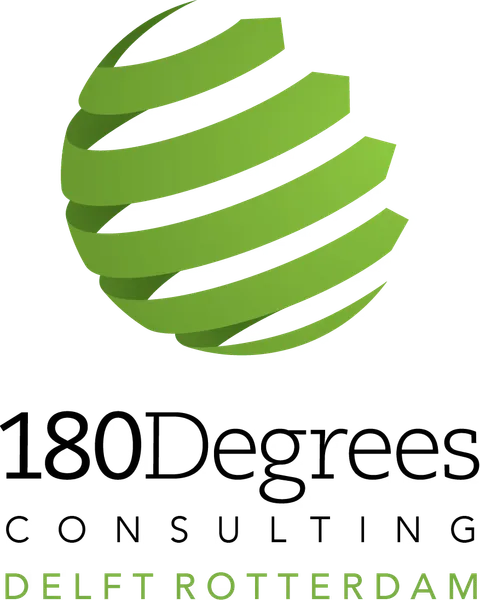
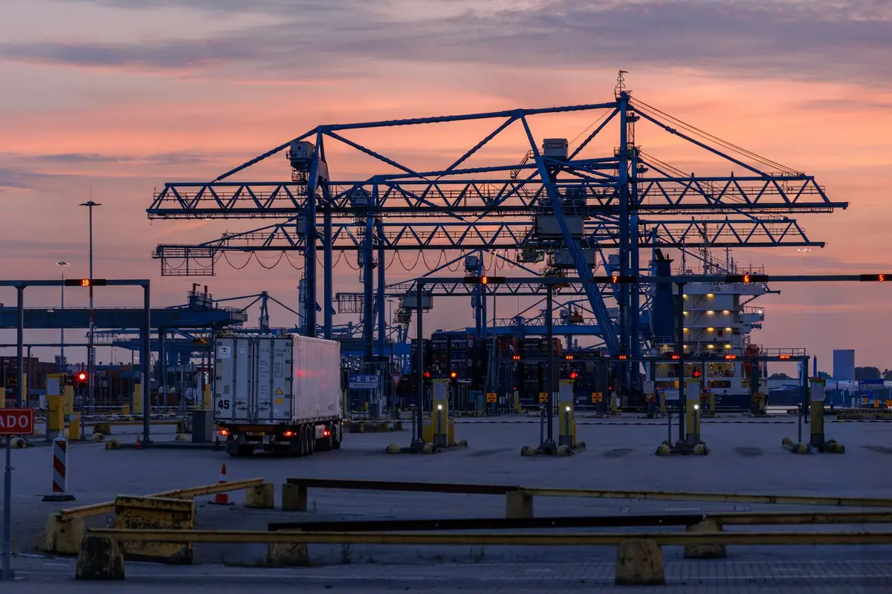

Heavy lifting
for organisations
doing good.
We are the first multi-city branch of 180 Degrees Consulting — the world's largest university-based consultancy. TU Delft engineering × Erasmus Rotterdam business, moving non-profit strategy the way this city moves freight: precisely, reliably, at scale.
Strategy consulting for organisations doing good — made uniquely affordable.
We make high-quality strategy consulting available to non-profits, social enterprises, and mission-driven institutions, while giving students from TU Delft and Erasmus Rotterdam their first real consulting experience.
Two cities, two universities, one team: the technical depth of Delft and the business acumen of Rotterdam, pointed at problems that matter. We are the first multi-city branch of 180 Degrees Consulting, the world's largest university-based consultancy.
Our focus is impact — but it isn't a gate. We work with almost any organisation trying to do good. If that's you, you're in the right place.
Read our full mission, and how we fit into 180DC worldwide →

The manifest
| Item | Founded | Structure | Network | Cost |
|---|---|---|---|---|
| 180U-01 | 2019in Delft, expanded to Rotterdam | 2 citiesTU Delft technical × Erasmus business | Firstmulti-city branch of 180DC worldwide | Low-costuniquely affordable consulting, always |
[Placeholder — impact numbers, honestly sourced, coming with the first Impact Report]
What we do
Digital Transformation
Putting the right tools and processes in place so a small team stops losing hours to manual work.
Marketing & Engagement
Reaching the audiences your mission serves, and the donors and volunteers who sustain it.
Financial Sustainability
Building funding models and cost structures that survive beyond the next grant cycle.
Market Assessment
Evidence on where demand, partners, and competition actually are before you commit resources.
Operational Efficiency
Finding where effort leaks out of your processes and redesigning them around your capacity.
Impact Measurement
Defining and tracking the numbers that prove your work works, for boards and funders.
Every deliverable is reviewed before it reaches you
Before any deck reaches a client it passes a senior-reviewer treatment: an AI-assisted review system our branch builds in-house and publishes in the open — evidence, logic, and clarity checked against professional consulting standards.

We are the only student consultancy we know of that can show you its quality system.
What a deliverable looks like
Our first case studies are being prepared for publication, with client consent. Until then, here is exactly what a 180DC engagement produces: a board-ready strategy deck, every underlying analysis handed to you, quality-assured before it reaches your desk.
No consulting experience required. Engineers, designers, economists wanted.
We recruit twice a year, once per consulting cycle: Cycle 1 recruits in September; Cycle 2 recruits in January/February.
Consultant
No experience required — and we mean it. Arrive fresh and learn on the job, with a trained team and a Team Leader around you. People sometimes talk themselves out of applying because they think they need consulting experience first — you don't, and it shouldn't stop you.
Team Leader
Team Leaders lead a consulting team through a cycle. Experience is wanted here: the usual path is one cycle as a Consultant, then stepping up to Team Leader the next. You'll own scope, client relationship, and quality for your project.
Two ways to partner
Recruiting partners get access to a self-selecting pool of ambitious students from two top universities — the engineers and economists who choose to spend their evenings on high-impact strategy work.
Knowledge partners — trainers, mentors, and expert advisors — raise the bar of our client work and get a front seat on how the next generation consults.
[Placeholder — partner logos awaiting first partnerships]
The team
Every 180DC branch is entirely student-run. [Placeholder — team photos awaiting photo session]
[Placeholder — roster pending confirmation against Monday.com]